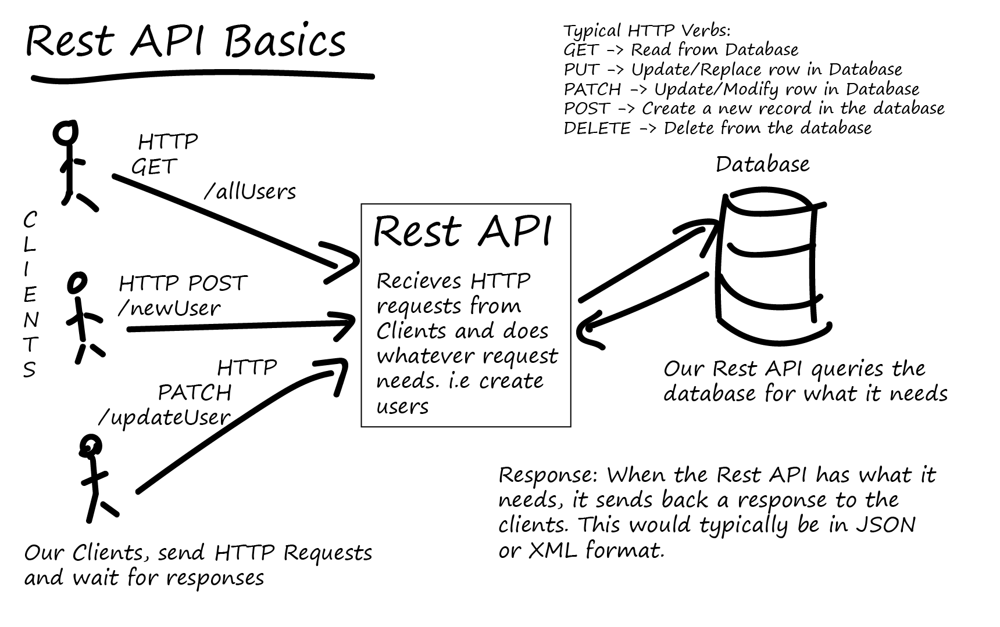
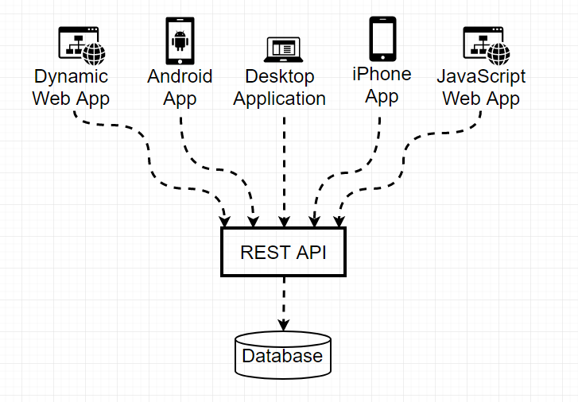

ECMAScript 6, commonly known as ES6, is one of the most significant updates to the JavaScript language. Released in 2015, ES6 introduced many powerful features that made JavaScript cleaner, faster, and easier to write. Today, almost every modern web application uses ES6 syntax because it improves readability, reduces repetitive code, and increases developer productivity.
Before ES6, developers had to write long and complicated JavaScript code to perform simple tasks. ES6 solved many of these problems by introducing new features such as let, const, arrow functions, template literals, destructuring, classes, modules, promises, and many more. Learning ES6 is essential for every frontend and full-stack developer because modern frameworks like React, Vue.js, Angular, and Node.js rely heavily on ES6 features.

ES6 stands for ECMAScript 2015. ECMAScript is the official standard that defines how JavaScript should work. Every new version introduces additional features that improve the language while maintaining compatibility with older code.
Today, all modern browsers support most ES6 features, making it the standard way of writing JavaScript applications.
let KeywordBefore ES6, developers mainly used the var keyword to declare variables. ES6 introduced let, which provides block scope and prevents many common programming mistakes.
let name = "Ali"; console.log(name);
Unlike var, variables declared with let exist only inside the block where they are created.
const KeywordThe const keyword is used for values that should not be reassigned after creation. It makes programs safer and easier to understand.
const country = "Pakistan"; console.log(country);
Trying to assign another value to country will produce an error.
| Feature | var | let | const |
|---|---|---|---|
| Scope | Function | Block | Block |
| Reassign | Yes | Yes | No |
| Redeclare | Yes | No | No |

Template literals make string formatting much easier by using backticks instead of quotation marks. Variables can be inserted directly into strings using the ${} syntax.
let name = "Asim";
console.log(`Welcome ${name}`);
Output:
Welcome Asim
Imagine you are creating a student management website. Instead of joining multiple strings with the + operator, template literals allow you to display names, marks, and grades inside a single readable string. This makes your code cleaner and easier to maintain.
Arrow functions are one of the most popular ES6 features. They provide a shorter and cleaner way to write functions. Arrow functions reduce unnecessary code and improve readability, especially in modern JavaScript frameworks like React.
const greet = () => {
console.log("Welcome to ES6");
};
greet();
Output:
Welcome to ES6
Arrow functions can also receive one or more parameters.
const add = (a, b) => {
return a + b;
};
console.log(add(10, 20));
Output:
30
Before ES6, developers had to manually check whether a parameter was provided. ES6 introduced default parameters, allowing functions to use predefined values when no argument is passed.
function welcome(name = "Guest"){
console.log("Welcome " + name);
}
welcome();
welcome("Ali");
Output:
Welcome Guest Welcome Ali
The spread operator expands the elements of an array or object into individual values. It is commonly used when copying arrays, combining multiple arrays, or passing arguments to functions.
const numbers = [10,20,30]; console.log(...numbers);
Output:
10 20 30
Combining arrays:
const a = [1,2]; const b = [3,4]; const result = [...a, ...b]; console.log(result);
Output:
[1,2,3,4]
Although the syntax looks the same as the spread operator, the rest operator performs the opposite task. It collects multiple values into a single array.
function total(...numbers){
console.log(numbers);
}
total(5,10,15,20);
Output:
[5,10,15,20]
Destructuring allows developers to extract values from arrays quickly without accessing each index individually.
const colors = ["Red","Green","Blue"]; const [first, second] = colors; console.log(first); console.log(second);
Output:
Red Green
Object destructuring extracts properties directly from an object, making code shorter and easier to understand.
const student = {
name: "Ali",
age: 18
};
const {name, age} = student;
console.log(name);
console.log(age);
Output:
Ali 18
ES6 introduced enhanced object literals, allowing developers to write objects with less code.
let name = "Asim";
let age = 20;
const student = {
name,
age
};
console.log(student);
This feature automatically creates object properties using variable names, making object creation faster and cleaner.
Imagine you are developing an online shopping website. The spread operator can combine product lists, destructuring can extract customer information, default parameters can provide default shipping options, and arrow functions can simplify event handling. These ES6 features reduce code duplication and make applications easier to maintain.
ES6 introduced classes, making Object-Oriented Programming (OOP) easier and more organized. A class acts as a blueprint for creating multiple objects with similar properties and methods. Although JavaScript uses prototypes internally, classes provide a cleaner and more familiar syntax for developers.
class Student {
constructor(name, age) {
this.name = name;
this.age = age;
}
introduce() {
console.log(`My name is ${this.name}`);
}
}
const student1 = new Student("Ali", 18);
student1.introduce();
Output:
My name is Ali
Modules allow developers to split large applications into smaller and reusable files. Instead of writing all code inside one JavaScript file, different features can be placed into separate modules and imported whenever required.
// math.js
export function add(a, b){
return a + b;
}
// app.js
import { add } from "./math.js";
console.log(add(5,10));
Modules improve code organization and make large projects easier to manage.
A Promise represents the result of an asynchronous operation. It can be in one of three states: Pending, Fulfilled, or Rejected. Promises make asynchronous programming easier than traditional callback functions.
const promise = new Promise((resolve, reject) => {
resolve("Data Loaded Successfully");
});
promise.then(result => {
console.log(result);
});
Output:
Data Loaded Successfully
ES6 transformed JavaScript by introducing modern features that make programming faster, cleaner, and more efficient. Features such as let, const, arrow functions, template literals, destructuring, classes, modules, and promises have become essential tools for every JavaScript developer. Whether you are building a simple portfolio website or a large web application, understanding ES6 will improve your coding skills and prepare you for modern frameworks like React, Vue.js, Angular, and Node.js. Regular practice with these features will help you write professional, maintainable, and high-quality JavaScript code.